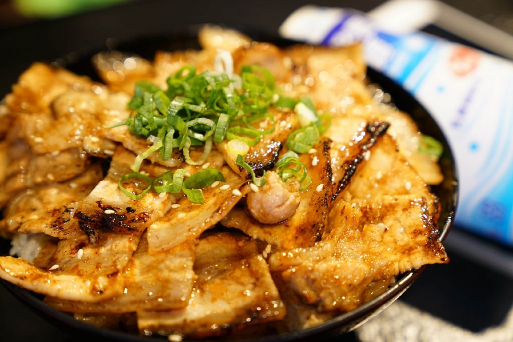

目錄
回首頁
中式料理
日式料理
義式料理
甜點
學而食習之
美食。分享。動手做
學而食習之
美食。分享。動手做
學而食習之
美食。分享。動手做
學而食習之
美食。分享。動手做
學而食習之
美食。分享。動手做
當前頁面:日式料理
回首頁

香煎雞肉丼
我要學!
Close
食材:
1.白飯少許
2.雞胸肉兩片
3.高麗菜少許
4.青蔥少許
5.雞蛋一顆
6.水、糖、醬油、胡椒粉少許
步驟:
1.先將雞肉洗淨後切塊
2.將雞肉放入3水1醬油1糖比例中抓醃一下
3.洋蔥、高麗菜依序下鍋拌炒，加入步驟二的醬汁約90cc與一杯水
4.放入雞肉煮熟後，將蛋液加入拌炒一下即可
5.加入白飯，簡易雞肉丼就完成了！
留言區：
紅豆銅鑼燒
我要學!
Close
食材:
1.雞蛋2顆
2.鬆餅粉100g
3.蜂蜜1匙
4.牛奶1匙
5.細白砂糖2匙
6.紅豆泥適量
步驟:
1.兩顆蛋用打蛋器打勻
2.加入糖、蜂蜜、牛奶與鬆餅粉拌勻
3.不沾鍋等鍋熱後，用小勺子取適量麵糊下鍋煎
4.每面煎約2分鐘後翻面
5.取兩片抹上紅豆泥闔上即可
留言區：
<做菜文章>
怎麼烹調都好吃！一次學會花椰菜的 5 種煮法
豆腐料理總是沒入味？主婦愛用的小技巧要學會！
無鹽、有鹽奶油差在哪？認識烘焙常用的 5 種奶油